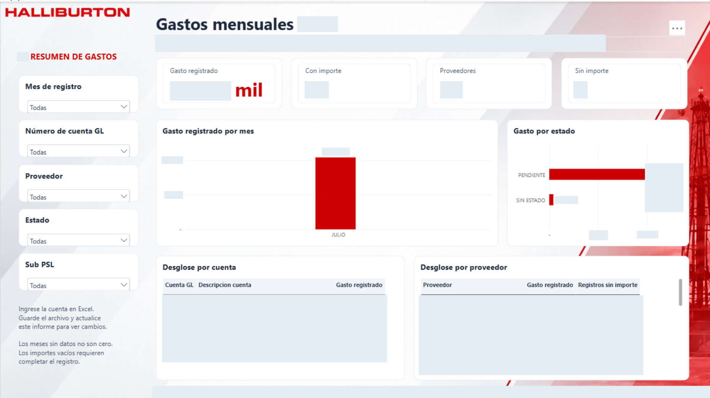

EXCEL · VBA · RIBBON
Tickets & ART
Automatización de rutinas de tickets y ART con Visual Basic y accesos desde una cinta Ribbon personalizada en Excel.
Input→VBA→Output
Conecto datos, automatizo procesos y diseño análisis que se pueden entender, revisar y usar.

01 / TRABAJO SELECCIONADO
Desde una planilla que necesita orden hasta un modelo que necesita evaluación. Explora el código, el enfoque y los límites de cada proyecto.
No hay proyectos con ese filtro. Prueba otra búsqueda.
Todos mis repositorios en GitHub↗02 / BUSINESS INTELLIGENCE
Dashboards de Power BI para seguimiento financiero, planificación y control operativo. Haz clic en una captura para verla en detalle.
Solicitar portafolio PDF ↓Muestras estáticas de trabajos propios. Nombres, importes y códigos confidenciales ocultos; las formas de los gráficos se conservan como referencia de diseño. La marca visible identifica el contexto del reporte y no implica afiliación o aval.
03 / AUTOMATIZACIÓN APLICADA
Herramientas pensadas para quienes trabajan con los datos todos los días.
EXCEL · VBA · RIBBON
Automatización de rutinas de tickets y ART con Visual Basic y accesos desde una cinta Ribbon personalizada en Excel.
EXCEL · POWER QUERY
Integración de matrices de control con hojas de planificación, personal y responsables para reducir la duplicación de registros.
CLAUDE CODE · CODEX · PYTHON
Creación y configuración de agentes de programación para apoyar desarrollo, revisión y automatización, con validación de las soluciones.
Combino una formación en Tecnologías de la Información e Inteligencia Artificial con proyectos de programación, análisis y resolución de problemas.
Trabajo en calidad de datos, visualización, automatización y modelos predictivos. Me interesa que cada resultado tenga contexto y que otra persona pueda entender cómo se obtuvo.
PUBLISHED RESEARCH / SPRINGER · 2024
Coautor de investigación sobre ataques a comunidades indígenas durante el paro nacional de Ecuador de 2022.
Leer publicación ↗¿TIENES DATOS Y UNA PREGUNTA?
Disponible para proyectos freelance y oportunidades remotas en análisis de datos, BI y automatización.